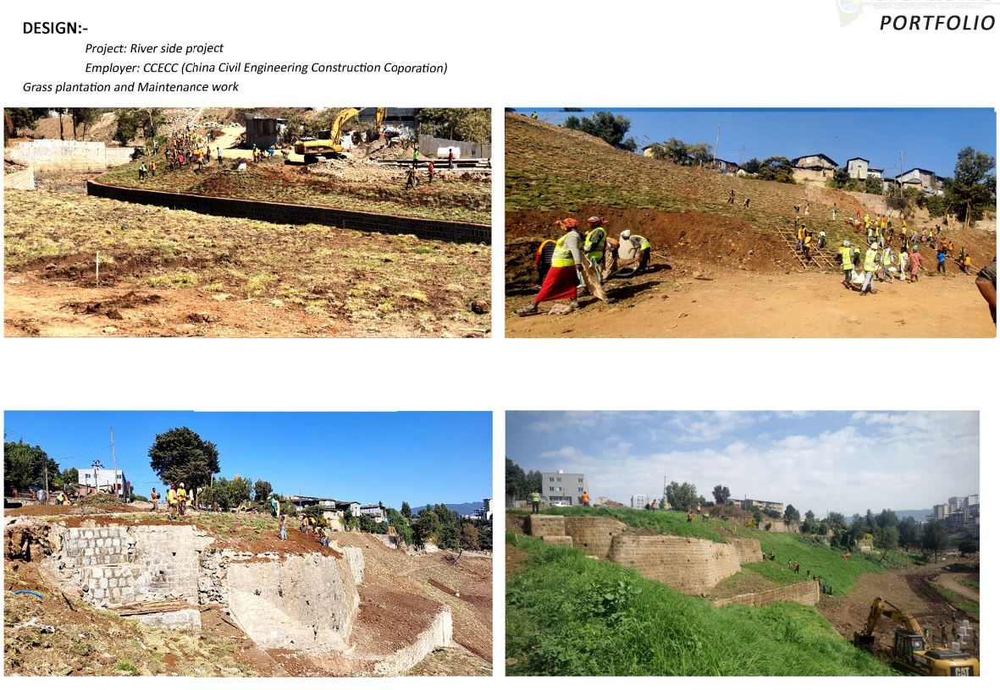
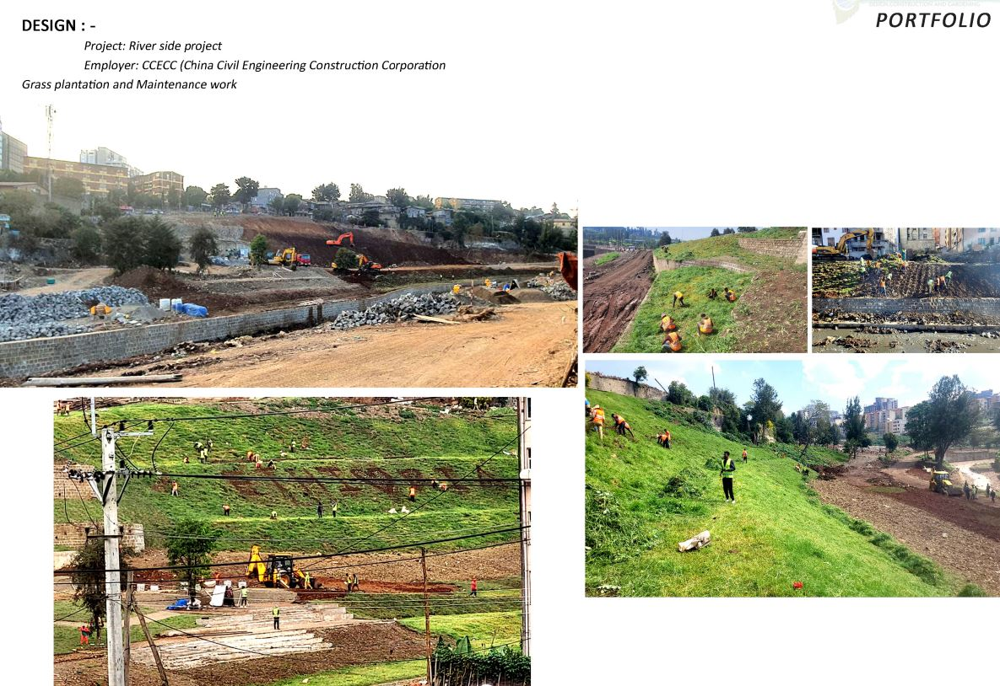

Friendship Phase 2 Park landscape and maintenance work
A public-facing park landscape shaped with planting, flower beds, clear circulation, and ongoing monthly maintenance support.
Discuss a similar projectA public-facing park landscape shaped with planting, flower beds, clear circulation, and ongoing monthly maintenance support.
Discuss a similar project
This project highlights VERT's approach to public landscape presentation: healthy lawn areas, structured flower planting, clean pathways, and a setting that remains visually strong through ongoing maintenance care.
The project combines visual order, accessible circulation, and well-maintained planting to support a polished civic environment.

